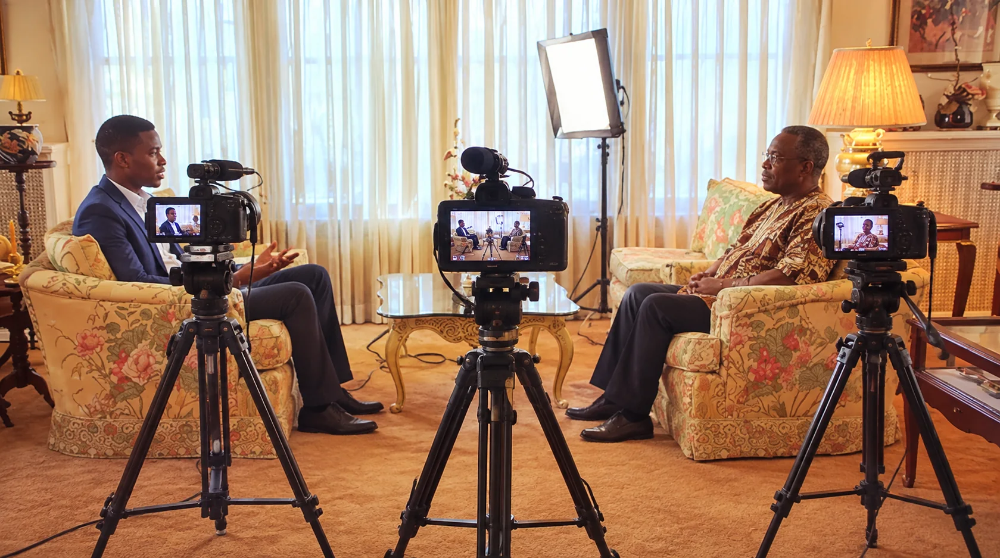
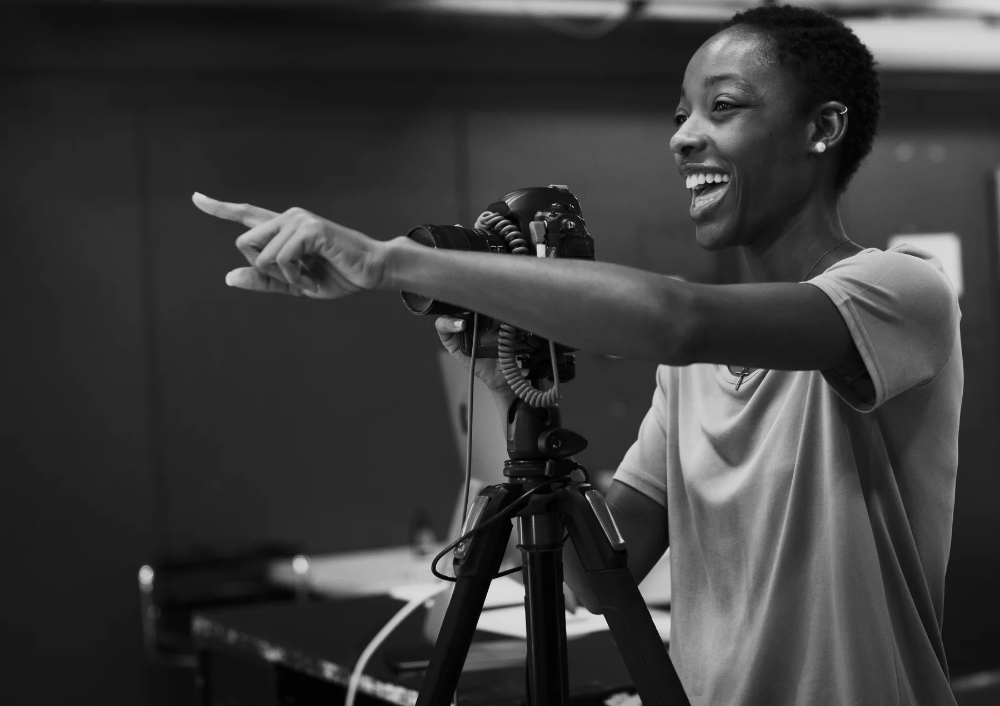
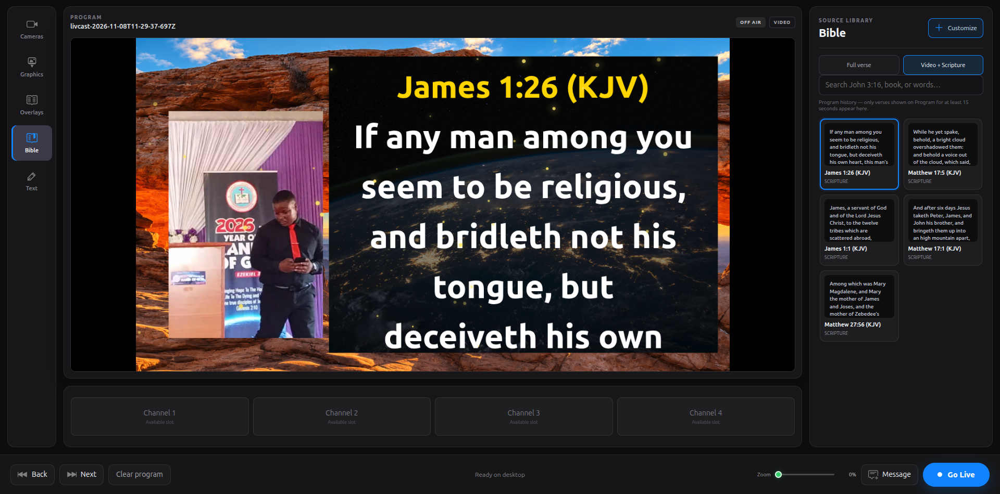

Mini Pro on Android
Choose Director to produce on one phone, or Camera Man to send a camera feed to another director or to Studio.
Stream to Facebook, YouTube, Twitch, TikTok, X (Twitter), and LinkedIn—all at once.

All you need to get started is LIVCAST Mini Pro and four Android smartphones. Bring multiple angles of your event together in one live production.
Built for Android phones · Works alongside LIVCAST Studio
More about LIVCAST
LIVCAST combines an Android app and a desktop production studio. Mini Pro captures video and can direct a small mobile production; Studio brings phone feeds and DSLR cameras together, adds the service graphics and streams the finished program.
Choose Director to produce on one phone, or Camera Man to send a camera feed to another director or to Studio.
Connect Android phones and supported DSLR cameras, prepare overlays and manage a fuller live production.
Mini Pro can stream to one platform. Studio supports multistreaming to as many as six platforms.
Wedding coverage
Mini Pro turns a phone into another camera position, while Studio lets the director choose when that moment reaches the live program.
Weddings · Mini Pro + Studio
Capture the couple, the ceremony and the atmosphere. The director can choose the view that belongs in the live program.

Interviews · Studio
Bring several camera positions into one production, then let Studio shape the conversation for the people watching.

Community events · Mini Pro
A phone and a willing camera operator can add another view to a small team's production.
A simple idea
One phone can show the speaker. Another can catch the choir or congregation. LIVCAST connects those camera operators to a director, who chooses what the audience sees and sends the finished program live.
From setup to stream
The work is shared across two apps: camera operators and directors use LivCast Mini; the production comes together in LivCast Studio.
The operator opens Camera Man in LivCast Mini and pairs with Studio over Wi‑Fi or USB. The phone becomes a camera channel.
The director selects a connected channel in Studio, follows the action and adds scripture, announcements or other graphics to the program.
Set the stream destination and key in Studio, then send the selected program to the platform where your audience is watching.
How the two apps work
Use Mini Pro on Android to capture or direct. Use Studio on desktop for a more advanced production with multiple camera types and streaming destinations.
Android · Director and Camera Man
Mini Pro is divided into Director and Camera Man. Camera Man sends its phone feed to a Mini Pro Director or to Studio. The Director can select shots, add overlays and stream a mobile production to one platform. The two sides let a small crew coordinate using Android phones.
Desktop · Advanced production and streaming
Studio combines phone feeds with supported DSLR cameras and other sources. Connect phones by USB, local Wi‑Fi or internet for long-range transmission. Prepare the program, manage audio and overlays, then stream to as many as six platforms.
Video quality and smoothness depend on the phones, computer, cameras and network. The same familiar production approach across Mini Pro and Studio helps teams move between Android and desktop.
Inside LivCast Studio
Studio brings the live picture and the service materials into one production workspace. Choose a chapter to see how the work fits together.

Help us keep building
Your support helps us keep improving LivCast for local teams. You can now contribute in USD or Malawi Kwacha.
LIVCAST questions
Mini Pro runs on Android and has Director and Camera Man modes. It can be a standalone mobile production tool, or its Camera Man feed can connect to Studio. Studio runs on a desktop and is designed for larger productions, with phone and supported DSLR camera sources, overlays and multistreaming to up to six platforms.
There are three options: connect by USB cable for a wired feed; use local Wi‑Fi to send video across the venue network; or use an internet connection for long-range transmission between locations. The best option depends on distance, network quality and available equipment.
Yes. Mini Pro has Director and Camera Man sides. A phone running Camera Man can send its footage to a phone running Director over Wi‑Fi. The Director can choose shots, use overlays and stream to one platform. Studio is optional for this mobile setup.
Studio is designed to bring supported DSLR cameras into the desktop production alongside smartphone feeds. The exact connection method and compatibility depend on the camera and capture equipment you use.
Mini Pro supports streaming to one platform from its mobile Director workflow. LIVCAST Studio can send the production to as many as six platforms at once, depending on your computer, internet connection and platform stream settings.
Yes. With a high-end Android phone that supports 4K video recording, such as a recent Samsung phone, connect the phone to LIVCAST Studio by USB and set the phone camera resolution to 4K. The footage sent to Studio is then 4K. The phone, cable and computer must support the selected mode.
Not yet. LIVCAST Mini Pro is currently for Android. iPhone availability may be announced in the future.
Yes. A team can start with Android phones and Mini Pro, then add a desktop running Studio for more camera sources and production controls. Use the support and app links on this page to follow availability and learn more.